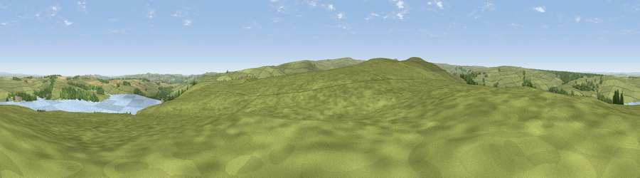

Viewpoint near Edmundbyers
#11444 in England · top 22% of its area beats it · near EdmundbyersWhere it is
The exact computed spot (NZ 00275 51125). Click the marker for map links.
The view, rendered

A 360° render of this exact spot computed from the terrain model, tree cover and land cover — summer colours, afternoon light, calibrated against photographs of famous viewpoints. Real trees, hedges and buildings will differ in detail.
The panorama
Grey silhouette: terrain skyline in each direction (720 bearings, Earth curvature and refraction included). Dashed green: skyline with trees (+15 m) and buildings (+8 m) as obstacles. Blue strip: how far the ground is visible on each bearing.
Where the view opens
Wedge length = distance to the farthest visible ground on that bearing (vegetation-aware). Rings at 10, 25 and 50 km.
What fills the view
85% grassland · 6% water · 5% woodland · 3% cropland ·
Angular shares of the visible panorama (visual magnitude), not map area. Landscape diversity 0.25 (0–1 Shannon).
Key numbers
More beautiful places nearby
The staircase of upgrades: each row has a higher view potential than everything closer. Driving times are estimates from straight-line distance, calibrated against real road routing — check an actual route before setting out.
| Place | Direction | Drive | Score |
|---|---|---|---|
| Bainbridge Hill | SW · 2 km | ~4 min | 66.7 |
| Viewpoint near Slaley | N · 4 km | ~9 min | 69.8 |
| Viewpoint near Rookhope | SSW · 7 km | ~14 min | 70.0 |
| Viewpoint near Rookhope | SW · 8 km | ~16 min | 70.4 |
| Collier Law | S · 9 km | ~18 min | 71.7 |
| Pontop Pike | E · 15 km | ~27 min | 77.8 |
| Little Dun Fell | WSW · 35 km | ~53 min | 78.4 |
| Cross Fell | WSW · 36 km | ~54 min | 78.7 |
54.85492, -1.99724 · source: screening · position refined by local search. Computed location — check access rights before visiting.